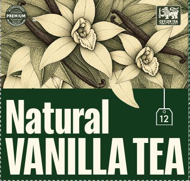

<meta charset="utf-8">
<title>Natural Vanilla Tea Box</title>
<link rel="preconnect" href="https://fonts.googleapis.com">
<link rel="preconnect" href="https://fonts.gstatic.com" crossorigin>
<link rel="stylesheet" href="https://fonts.googleapis.com/css2?family=Fraunces:ital,opsz,wght,SOFT,WONK@0,9..144,400..700,100,1;1,9..144,400,100,1&family=Geist:wght@400;500;600&family=Geist+Mono:wght@500&display=swap">
<style>
/* Layout: a studio bench — the turning box on the left, the reasoning beside it, the spec sheet underneath. */
:root {
  --paper: #ECE8DA;      /* warm studio paper */
  --stage: #E2DDCB;
  --ink: #1B2A1E;
  --muted: #5E6B5C;
  --line: #CFC9B4;
  --forest: #143A1D;     /* brand green from the source file */
  --lime: #C9D46A;
  --chip: #F6F3E8;
  --display: "Fraunces", Georgia, "Times New Roman", serif;
  --sans: "Geist", ui-sans-serif, system-ui, -apple-system, "Segoe UI", sans-serif;
  --mono: "Geist Mono", ui-monospace, "SFMono-Regular", Menlo, monospace;
}
@media (prefers-color-scheme: dark) {
  :root:not([data-theme="light"]) {
    --paper: #101712; --stage: #17211A; --ink: #ECE7D6; --muted: #9EA897; --line: #2C3A2F;
    --forest: #D3DD7C; --lime: #D3DD7C; --chip: #1C281F; color-scheme: dark;
  }
}
:root[data-theme="dark"] {
  --paper: #101712; --stage: #17211A; --ink: #ECE7D6; --muted: #9EA897; --line: #2C3A2F;
  --forest: #D3DD7C; --lime: #D3DD7C; --chip: #1C281F; color-scheme: dark;
}

* { box-sizing: border-box; }
[hidden] { display: none !important; }
body { background: var(--paper); color: var(--ink); font: 15px/1.55 var(--sans); }
.wrap { max-width: 1240px; margin: 0 auto; padding-inline: clamp(16px, 4vw, 40px); }

header.top { padding-block: 40px 22px; display: grid; gap: 10px; }
.eyebrow { margin: 0; font: 500 12px/1 var(--mono); letter-spacing: .12em; text-transform: uppercase; color: var(--muted); }
h1 { margin: 0; font: 600 clamp(40px, 7vw, 84px)/.95 var(--display); font-variation-settings: "SOFT" 100, "WONK" 1, "opsz" 144; letter-spacing: -.02em; text-wrap: balance; }
h1 em { font-style: italic; font-weight: 400; color: var(--forest); }
.lede { margin: 6px 0 0; max-width: 62ch; color: var(--muted); font-size: 16px; }

.studio { display: grid; grid-template-columns: minmax(0, 1.55fr) minmax(0, 1fr); gap: clamp(20px, 3vw, 40px); padding-block: 8px 40px; align-items: start; }
@media (max-width: 880px) { .studio { grid-template-columns: 1fr; } }

.stage { position: relative; aspect-ratio: 1 / 0.92; max-width: 100%; background: radial-gradient(120% 90% at 50% 30%, color-mix(in srgb, var(--stage) 60%, var(--paper)) 0%, var(--stage) 70%); border-radius: 18px; overflow: hidden; touch-action: none; cursor: grab; }
.stage.dragging { cursor: grabbing; }
.stage canvas { position: absolute; inset: 0; width: 100%; height: 100%; display: block; }
.flat { position: absolute; inset: 0; display: grid; place-items: center; padding: 16px; background: #FFFFFF; cursor: default; }
.flat svg { width: 100%; height: 100%; }
.hint { position: absolute; left: 16px; bottom: 14px; margin: 0; font: 500 11px/1 var(--mono); letter-spacing: .1em; text-transform: uppercase; color: var(--muted); pointer-events: none; }
.status { position: absolute; inset: 0; display: grid; place-items: center; margin: 0; font: 500 12px/1 var(--mono); letter-spacing: .1em; text-transform: uppercase; color: var(--muted); }

.controls { display: flex; flex-wrap: wrap; gap: 12px 20px; align-items: center; justify-content: space-between; margin-top: 14px; }
.group { display: flex; flex-wrap: wrap; gap: 8px; align-items: center; }
.group-label { font: 500 11px/1 var(--mono); letter-spacing: .1em; text-transform: uppercase; color: var(--muted); margin-right: 4px; }
button { font: 500 13px/1 var(--sans); color: var(--ink); background: var(--chip); border: 1px solid var(--line); border-radius: 999px; padding: 9px 14px; cursor: pointer; display: inline-flex; align-items: center; gap: 8px; }
button:hover { border-color: var(--muted); }
button[aria-pressed="true"] { border-color: var(--ink); box-shadow: inset 0 0 0 1px var(--ink); }
button:focus-visible { outline: 2px solid var(--forest); outline-offset: 2px; }
.sw { width: 14px; height: 14px; border-radius: 50%; display: inline-block; box-shadow: inset 0 0 0 1px rgba(0,0,0,.15); }

.notes { display: grid; gap: 22px; min-width: 0; }
.notes h2, .specs h2 { margin: 0; font: 600 26px/1.1 var(--display); font-variation-settings: "SOFT" 100, "WONK" 1, "opsz" 72; letter-spacing: -.01em; }
.before { margin: 0; display: grid; grid-template-columns: 112px minmax(0, 1fr); gap: 14px; align-items: center; }
.before img { width: 112px; height: auto; border-radius: 8px; display: block; }
.before figcaption { font-size: 13.5px; color: var(--muted); }
.before strong { color: var(--ink); font-weight: 600; }
.changes { list-style: none; margin: 0; padding: 0; display: grid; gap: 14px; }
.changes li { display: grid; gap: 3px; padding-top: 14px; border-top: 1px solid var(--line); }
.changes b { font: 600 15px/1.3 var(--sans); }
.changes span { color: var(--muted); font-size: 14px; max-width: 60ch; }

.specs { padding-block: 8px 64px; display: grid; gap: 18px; }
.spec-grid { display: grid; grid-template-columns: repeat(auto-fit, minmax(220px, 1fr)); gap: 0 28px; }
.spec { display: grid; gap: 4px; padding-block: 14px; border-top: 1px solid var(--line); min-width: 0; }
.spec dt { font: 500 11px/1.2 var(--mono); letter-spacing: .1em; text-transform: uppercase; color: var(--muted); }
.spec dd { margin: 0; font-variant-numeric: tabular-nums; }
.toast { position: fixed; left: 50%; bottom: calc(20px + env(safe-area-inset-bottom, 0px)); transform: translateX(-50%); background: var(--ink); color: var(--paper); padding: 10px 16px; border-radius: 999px; font-size: 13px; }
</style>

<header class="wrap top">
  <p class="eyebrow">The Vanilla Shop · Battaramulla · Packaging concept</p>
  <h1>Natural Vanilla Tea, <em>redrawn</em></h1>
  <p class="lede">A redesign of the 12-bag tea box on your exact dieline: cut-paper vanilla orchid, a grain glow for the aroma, and a soft retro serif set big. Drag the box to turn it.</p>
</header>

<main class="wrap studio">
  <section aria-label="Box preview">
    <div class="stage" id="stage">
      <canvas id="c" aria-label="3D preview of the tea box"></canvas>
      <div class="flat" id="flat" hidden></div>
      <p class="status" id="status">Loading artwork…</p>
      <p class="hint" id="hint">Drag to turn</p>
    </div>
    <div class="controls">
      <div class="group" role="group" aria-label="Colourway" id="colorways">
        <span class="group-label">Colourway</span>
      </div>
      <div class="group" role="group" aria-label="View">
        <button id="view3d" aria-pressed="true">3D box</button>
        <button id="viewFlat" aria-pressed="false">Print sheet</button>
        <button id="copySvg">Copy SVG for Illustrator</button>
      </div>
    </div>
  </section>

  <aside class="notes">
    <h2>What changed</h2>
    <figure class="before">
      
      <figcaption><strong>Current front.</strong> The flower is a lily, the type is a stock condensed sans, and the green panel has nothing else going on.</figcaption>
    </figure>
    <ul class="changes">
      <li><b>A real vanilla orchid</b><span>Pale green-yellow sepals and the rolled trumpet lip of Vanilla planifolia, on a vine with aerial roots, beside cured pods tied in twine.</span></li>
      <li><b>Cut-paper, Matisse-style</b><span>Flat shapes with a lifted shadow and cut-out leaf veins. This follows the botanical tea and matcha boxes on your boards (Theory of Tea, the olive cut-flower matcha box).</span></li>
      <li><b>Glow for aroma</b><span>A vector grain stipple behind the flower, like the grainy matcha gradients, and a print-safe version of the "glow" moment in the animation brief.</span></li>
      <li><b>Type with a voice</b><span>Fraunces, a soft retro serif, set vertically across the full front, in the spirit of Ochaya and Twelve. Geist and Geist Mono carry the details.</span></li>
      <li><b>Still your brand</b><span>Forest keeps your existing green #143A1D and cream #FEF8E9. Cream and Lime are two alternatives for a wider range.</span></li>
    </ul>
  </aside>
</main>

<section class="wrap specs" aria-labelledby="specs-h">
  <h2 id="specs-h">Print sheet</h2>
  <dl class="spec-grid">
    <div class="spec"><dt>Dieline</dt><dd>Cut and fold lines copied from your 2.pdf, on the same 1194.94 × 1052.97 pt artboard</dd></div>
    <div class="spec"><dt>Box, fold to fold</dt><dd>87.7 W × 84.7 H × 84.6 D mm</dd></div>
    <div class="spec"><dt>Artwork</dt><dd>All vector. Type is outlined, so no fonts are needed to open it</dd></div>
    <div class="spec"><dt>Still to supply</dt><dd>Ingredients, EAN barcode, Ceylon Tea lion logo, Agro Ventures logo, official Vanilla Shop logo</dd></div>
  </dl>
</section>

<script src="https://cdnjs.cloudflare.com/ajax/libs/three.js/r128/three.min.js"></script>
<script src="https://cdnjs.cloudflare.com/ajax/libs/opentype.js/1.3.4/opentype.min.js"></script>
<script src="dieline.js"></script>
<script src="art.js"></script>
<script>
(async function () {
  const VS = window.VS;
  const $ = (id) => document.getElementById(id);
  const status = $('status');
  const reduced = matchMedia('(prefers-reduced-motion: reduce)').matches;

  // Fonts ship with the page so the outlines match the exported files exactly.
  const load = async (f) => opentype.parse(await (await fetch('fonts/' + f)).arrayBuffer());
  try {
    const [display, italic, sans, bold, mono] = await Promise.all(
      ['fraunces-display.ttf', 'fraunces-italic.ttf', 'geist-medium.ttf', 'geist-bold.ttf', 'geist-mono.ttf'].map(load));
    VS.setFonts({ display, italic, sans, bold, mono });
  } catch (e) {
    status.textContent = 'The font files did not load. Reload the page to try again.';
    return;
  }

  let colorway = 'forest';
  try { colorway = localStorage.getItem('vs-colorway') || 'forest'; } catch (e) {}
  if (!VS.COLORWAYS[colorway]) colorway = 'forest';

  // ---- Colourway buttons
  const cwWrap = $('colorways');
  Object.entries(VS.COLORWAYS).forEach(([key, c]) => {
    const b = document.createElement('button');
    b.type = 'button'; b.dataset.cw = key;
    b.innerHTML = `<span class="sw" style="background:linear-gradient(135deg, ${c.bg} 55%, ${c.accent} 55%)"></span>${c.name}`;
    b.addEventListener('click', () => setColorway(key));
    cwWrap.appendChild(b);
  });

  // ---- three.js scene
  const stage = $('stage'), canvas = $('c');
  const renderer = new THREE.WebGLRenderer({ canvas, antialias: true, alpha: true });
  renderer.setPixelRatio(Math.min(devicePixelRatio, 2));
  renderer.outputEncoding = THREE.sRGBEncoding;
  renderer.shadowMap.enabled = true;
  renderer.shadowMap.type = THREE.PCFSoftShadowMap;
  const maxAniso = renderer.capabilities.getMaxAnisotropy();

  const scene = new THREE.Scene();
  const camera = new THREE.PerspectiveCamera(24, 1, 1, 200);
  const target = new THREE.Vector3(0, -0.4, 0);
  let dist = 44;

  scene.add(new THREE.HemisphereLight(0xffffff, 0xcfc6a8, 0.72));
  const key = new THREE.DirectionalLight(0xffffff, 0.62);
  key.position.set(-9, 14, 10);
  key.castShadow = true;
  key.shadow.mapSize.set(2048, 2048);
  key.shadow.camera.left = -12; key.shadow.camera.right = 12; key.shadow.camera.top = 12; key.shadow.camera.bottom = -12;
  key.shadow.radius = 8;
  scene.add(key);
  const rim = new THREE.DirectionalLight(0xfff3d6, 0.22);
  rim.position.set(10, 4, -8);
  scene.add(rim);

  const B = VS.BOX, s = 0.1; // 1 unit = 10 mm
  const W = B.w * s, H = B.h * s, D = B.d * s;
  const ground = new THREE.Mesh(new THREE.PlaneGeometry(60, 60), new THREE.ShadowMaterial({ opacity: 0.2 }));
  ground.rotation.x = -Math.PI / 2; ground.position.y = -H / 2 - 0.001; ground.receiveShadow = true;
  scene.add(ground);

  // Faces in BoxGeometry order: +x, -x, +y, -y, +z, -z
  const faceKeys = ['sideA', 'sideB', 'top', 'bottom', 'front', 'back'];
  const mats = faceKeys.map(() => new THREE.MeshStandardMaterial({ color: 0xffffff, roughness: 0.82, metalness: 0 }));
  const box = new THREE.Mesh(new THREE.BoxGeometry(W, H, D), mats);
  box.castShadow = true;
  const pivot = new THREE.Group();
  pivot.add(box);
  scene.add(pivot);

  const svgToCanvas = (svg, px) => new Promise((resolve, reject) => {
    const img = new Image();
    const url = URL.createObjectURL(new Blob([svg], { type: 'image/svg+xml' }));
    img.onload = () => {
      const cv = document.createElement('canvas');
      cv.width = px; cv.height = Math.round(px * img.height / img.width);
      cv.getContext('2d').drawImage(img, 0, 0, cv.width, cv.height);
      URL.revokeObjectURL(url); resolve(cv);
    };
    img.onerror = reject;
    img.src = url;
  });

  async function texture(cw) {
    const canvases = await Promise.all(faceKeys.map((k) => svgToCanvas(VS.faceSVG(k, cw), 1400)));
    canvases.forEach((cv, i) => {
      const t = new THREE.CanvasTexture(cv);
      t.encoding = THREE.sRGBEncoding;
      t.anisotropy = maxAniso;
      if (faceKeys[i] === 'bottom') { t.center.set(0.5, 0.5); t.rotation = Math.PI; }
      if (mats[i].map) mats[i].map.dispose();
      mats[i].map = t; mats[i].needsUpdate = true;
    });
  }

  function resize() {
    const r = stage.getBoundingClientRect();
    renderer.setSize(r.width, r.height, false);
    camera.aspect = r.width / r.height;
    dist = camera.aspect < 0.9 ? 50 : 44;
    camera.updateProjectionMatrix();
  }
  new ResizeObserver(resize).observe(stage);
  resize();

  // ---- Drag to turn, with a little inertia
  let ry = -0.62, rx = 0.36, vy = 0, vx = 0, dragging = false, lastX = 0, lastY = 0, idle = 0;
  stage.addEventListener('pointerdown', (e) => {
    if (!$('flat').hidden) return;
    dragging = true; lastX = e.clientX; lastY = e.clientY; vy = vx = 0;
    stage.setPointerCapture(e.pointerId); stage.classList.add('dragging');
  });
  stage.addEventListener('pointermove', (e) => {
    if (!dragging) return;
    const dx = e.clientX - lastX, dy = e.clientY - lastY;
    lastX = e.clientX; lastY = e.clientY;
    vy = dx * 0.008; vx = dy * 0.006;
    ry += vy; rx = Math.max(0.04, Math.min(1.25, rx + vx));
  });
  const end = () => { dragging = false; idle = 0; stage.classList.remove('dragging'); };
  stage.addEventListener('pointerup', end);
  stage.addEventListener('pointercancel', end);

  function frame() {
    if (!dragging) {
      ry += vy; rx = Math.max(0.04, Math.min(1.25, rx + vx));
      vy *= 0.94; vx *= 0.9;
      idle++;
      if (!reduced && idle > 120 && Math.abs(vy) < 0.001) ry += 0.0025;
    }
    pivot.rotation.y = ry;
    camera.position.set(0, target.y + Math.sin(rx) * dist, Math.cos(rx) * dist);
    camera.lookAt(target);
    renderer.render(scene, camera);
    requestAnimationFrame(frame);
  }

  // ---- Views
  const flat = $('flat');
  function setView(v) {
    const isFlat = v === 'flat';
    flat.hidden = !isFlat;
    $('hint').hidden = isFlat;
    $('view3d').setAttribute('aria-pressed', String(!isFlat));
    $('viewFlat').setAttribute('aria-pressed', String(isFlat));
    if (isFlat) flat.innerHTML = VS.sheetSVG(colorway, { paper: '#FFFFFF' });
  }
  $('view3d').addEventListener('click', () => setView('3d'));
  $('viewFlat').addEventListener('click', () => setView('flat'));

  async function setColorway(key) {
    colorway = key;
    try { localStorage.setItem('vs-colorway', key); } catch (e) {}
    cwWrap.querySelectorAll('button').forEach((b) => b.setAttribute('aria-pressed', String(b.dataset.cw === key)));
    await texture(key);
    if (!flat.hidden) flat.innerHTML = VS.sheetSVG(key, { paper: '#FFFFFF' });
  }

  // ---- Copy the print sheet as SVG code (Illustrator accepts pasted SVG as artwork)
  function toast(msg) {
    const t = document.createElement('div');
    t.className = 'toast'; t.setAttribute('role', 'status'); t.textContent = msg;
    document.body.appendChild(t); setTimeout(() => t.remove(), 2600);
  }
  $('copySvg').addEventListener('click', () => {
    const svg = VS.sheetSVG(colorway, { paper: '#FFFFFF' });
    navigator.clipboard.writeText(svg)
      .then(() => toast('Copied. Paste into a new Illustrator document.'))
      .catch(() => toast('Your browser blocked copying. Use the SVG files in the project folder instead.'));
  });

  await setColorway(colorway);
  status.remove();
  requestAnimationFrame(frame);
})();
</script>
